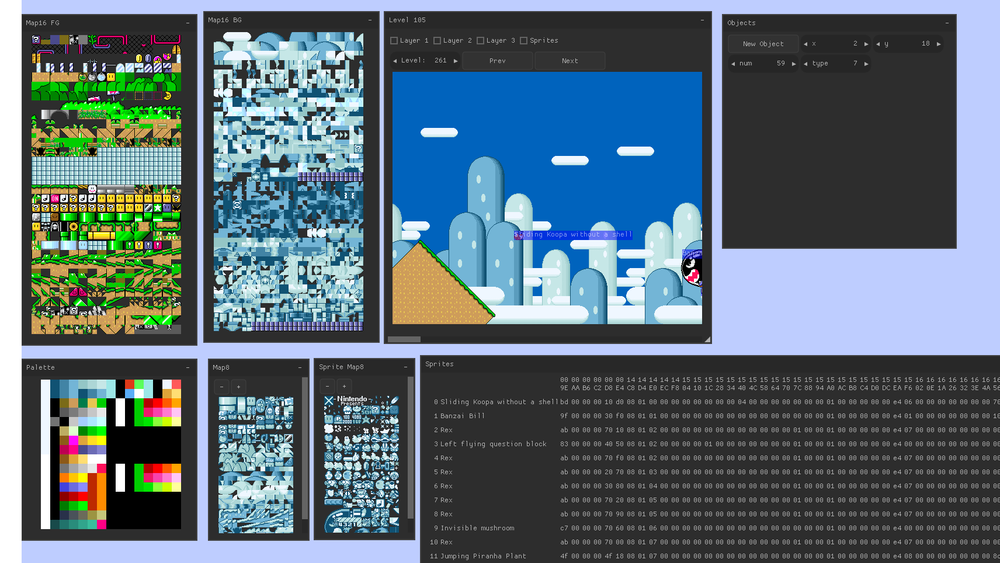
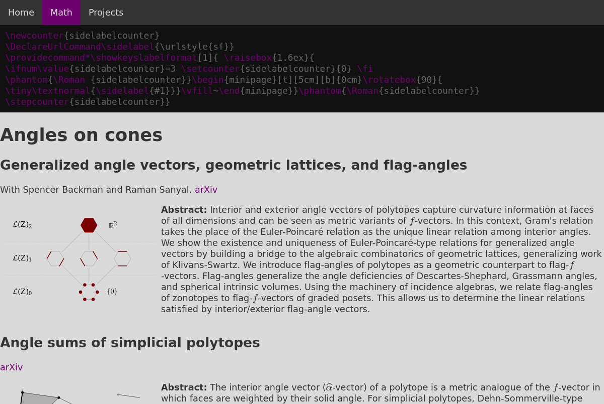

Game related
Pufferlink
An unfinished game about
homology.
The rules are in principle analogous to
slitherlink
but in three dimensions. Right now, multiple geometries are supported
(cubical tilings, permutahedra tilings, and even a 120-cell), generated
9using a very crude convex hull algorithm.
Topological features such as holes can be detected, but they do not
have impact on the game play yet.
Custom renderer in OpenGL, has a platform layer abstracted from
SDL2
and uses Tracy for profiling.
Written in C.
Mockup - A level editor for Super Mario World©

A level editor for Super Mario World, which is currently abandoned.
It features a working emulator for (a part of) the SNES (adapted
from bsnes),
which it uses to display game specific objects without reverse
engineering how they are supposed to interact. To make the editing
part possible, it also features an assembler for the wdc65816 (the chip
of the SNES), which is fast enough to reassemble the whole ROM in under 16ms
to ensure rendering at 60fps.
Written in C.
Falcon
Planets
A demo inspired by this blog post.
It creates a small solar system using a method similar to the one
outlined in the blog post but adapted to a sphere (in 3d space).
Thus, the path tracing is done on the sphere instead of the circle and is then mapped onto
a texture without introducing discontinuities when projecting back.
Made with raylib
Written in C.
Wolves and sheeps
_ W W _
_ _ _ _
_ _ _ _
_ _ _ _
_ _ _ _
_ _ _ _
_ S S _
S S S S
A classical game for two on a chess board, see
wikipedia,
but with the twist that there are more wolves and more sheeps. This
program solves these types of games. Two wolves and six sheep is a win
for the wolves with perfect play, while seven sheep can contain the
two wolves. To make the search quicker, the boards are represented
using two 32-bit integers and moves are generated using bithacks.
Uses the hashmap in stb-lib.
Written in C.
Algorithms
Linear programming
-2.000 3.000 4.000 0.000 0.000 |
-------------------------------+-------
3.000 2.000 1.000 1.000 0.000 | 10.000
2.000 5.000 3.000 0.000 1.000 | 15.000
Linear programming
solver based on this
blog post.
As in the blog post, an interior point method is used and
it turned out to be a lot simpler than my previous attempts
with the simplex method.
Uses CSparse for sparse matrix operations.
Written in C.
Shift reduce parsing with 'Baba is you'
object_part is w
object_part is w i
object_part is w i n
object_part is win
object_part is adjective
object_part verb_adjective
object_part verb_part
sentence
start
A shift-reduce parser written from scratch. The grammer I included is
derived from the game Baba is you
showing a (perhaps superior?) way to implement the core mechanic.
Written in C.
Puzzle related
Molecularis
A friend of mine created a new type of puzzle.
I wrote a solver and generator for these. A very large instance can be found
here. The problem is reformulated as an
SMT-problem
(the "theory" being the connectedness of atoms) and then solved with
PicoSAT.
Moreover, I wrote a GUI for human solving at the computer allowing the user to conveniently
undo mistakes.
Written in C.
Slitherlink
A slitherlink
program. It takes the riddles from
janko.at
as input. It has two advantages over the puzzle applet provided there.
First, it also/only works offline. Second, the input handling is a bit more convenient.
The left mouse button toggles between filled and unknown, while the right mouse
button toggles between empty and unknown, which is in the authors opinion easier
than the stateful approach at janko.at. Moreover, it automatically fills
whole regions when this is implied by the edges, which is a real time saver.
Written in C.
Other
This website

Written by hand from scratch in HTML and CSS. Except for MathJax, no javascript is used.